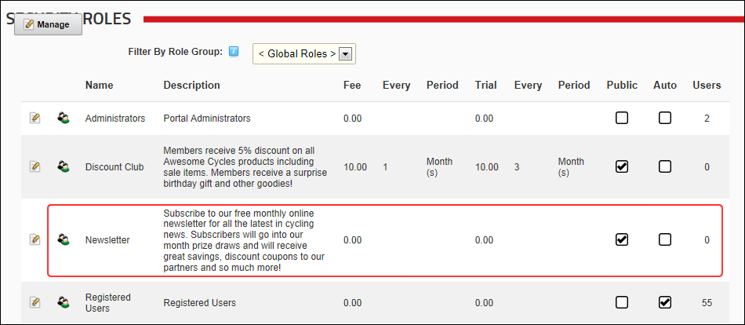

Creating a Membership Service
How to create a Membership Service using the Security Roles module. A Membership Service is a security role that is set as Public. These roles are displayed to users when they manage their account under the Manage Services link on the Manage Profile page. For here users can view details of the available membership services and elect to subscribe to or unsubscribe to them. A trial period, trial fee, service period, and service fee can also be set for membership services. See "Adding a Security Role with a Fee"
- Navigate to Admin >
 Security Roles - OR - Go to a Security Roles module.
Security Roles - OR - Go to a Security Roles module.
- Click the Add New Role button.
- Go to the Basic Settings section.
- In the Role Name text box, enter a name for the role.
- Optional. In the Description text box, enter a brief description of the role.
- Optional. At Role Group, select a role group for this role if required.
- At Public Role?, to set this role as a Membership Service.
- Optional. At Auto Assignment, select from the following options:
- Mark
 the check box to assign all users to this role. This includes both existing and new users.
the check box to assign all users to this role. This includes both existing and new users. - Unmark
 the check box if users must subscribe to the role.
the check box if users must subscribe to the role.
- At Security Mode, select one of the following options:
- Security Role: Select to add a security role.
- Social Group: Select to add a social group. Social groups are displayed on the Social Groups module allowing site members to join, follow and participate in groups.
- Both: Select to add a role that is both a social group and a security role.
- At Status, select one of the following options:
- Disabled: The Role Group is not available regardless of the "Public Role" setting.
- Approved: The Role Group is available dependent upon the "Public Role" setting.
- Pending: The Role Group is available to non-Administrators/SuperUsers regardless of the "Public Role" setting. However, the Group is not permissioned until it is moved to "Approved" status.

-
Tip: The new role is now displayed as a member's service on the View Profile (also called the My Profile) module.

Member Services displayed on the Manage Profile page on the User Profile page